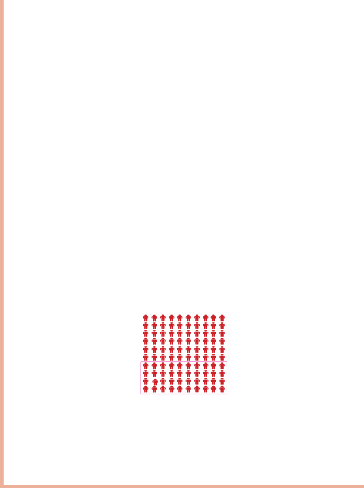

Na atividade 4, observe como os estudantes fazem essa contagem e, se for preciso, escreva no quadro a sequência de 8 a 14 e contem juntos.
Eles devem perceber que começamos a contar a partir do 9, pois entre 8 e 9 passou 1 hora.
A reta numerada também é um bom recurso para auxiliar nessa compreensão.
A resposta esperada é 6 horas.
Drazen Zigic/Shutterstock
motorista
Craig Dingle/Shutterstock
piloto de avião
4) QUAL É A CARGA HORÁRIA DIÁRIA DE UMA PESSOA QUE CHEGA AO TRABALHO ÀS 8 HORAS E SAI ÀS 14 HORAS?
5) DE ACORDO COM DADOS DO SISTEMA NACIONAL DE INFORMAÇÕES SOBRE SANEAMENTO (SNIS), EM 2021, 60% DA POPULAÇÃO DA REGIÃO NORTE DO BRASIL ERA ABASTECIDA COM ÁGUA TRATADA.
DE ACORDO COM ESSES DADOS, RESPONDA:
A) A CADA GRUPO DE 100 PESSOAS, QUANTAS SÃO ABASTECIDAS COM ÁGUA TRATADA?
B) CONTORNE O TOTAL DE PESSOAS QUE NÃO SÃO ABASTECIDAS COM ÁGUA TRATADA NA REPRESENTAÇÃO A SEGUIR:

Valéria Rezende
C) QUAL É A PORCENTAGEM DE PESSOAS QUE NÃO TINHAM ÁGUA TRATADA NA REGIÃO NORTE EM 2021?
Na atividade 5, aproveite para verificar se eles resolvem a atividade usando a mesma estratégia.